소통과 협업을 통해 서로의 강점을 조합하는 기획자
35년 도메인 경험을 AI·웹서비스 기획·설계·개발로 연결한 Project Manager
책임 경계·계층·SSOT 운영 조건을 먼저 정의합니다.
업무 흐름·우선순위·협업 기준을 실행 가능한 프로세스로 전환합니다.
스키마·정규화·PK·모듈 경계를 데이터로 판단하고 재설계합니다.
About
경력은 배경이고, 포트폴리오는 문제를 푼 방식입니다.
복잡한 현장 문제를 시스템 책임과 데이터 흐름으로 번역해 온 경력을, 최근 AI·웹서비스의 기획·설계·개발로 확장했습니다.
POSITION
AI·웹서비스 기획 / Technical PM
CAREER
35년 2개월
LG화학 · 설비보전 · 자재 · 생산 · 물류
RECENT
2025.03 – 현재
AI · 웹서비스 기획 · 설계 · 개발
EDUCATION
한양사이버대학교 정보통신공학
2009.03–2013.03 졸업
LICENSE
위험물안전관리자 · 전자상거래관리사 2급
인터넷정보검색사 2급 · 기능사 2종
How I Work
기술보다 먼저 책임 경계와 데이터 흐름을 정의하고, 구현 이후 로그와 지표로 검증합니다.
ARCHITECTURE
책임 · 계층 · SSOT
PROCESS
흐름 · 우선순위
DATA / REFACTOR
스키마 · PK · 모듈
BUILD / VERIFY
통합 테스트 · 지표
REPEATABLE METHOD
K-Beauty 데이터 파이프라인 · NanoBanana 운영 구조 · ExWS 현장 프로세스 · Python KIOSK, Library 리팩토링
Selected Work
실제 운영 사이트와 실행 화면으로 아키텍처·프로세스·데이터 역량을 증명합니다.
성분 분석 사이트 · 기획 · 설계 · 개발
API 프롬프트 서비스 · 운영 · 리팩토링
무선 자재관리 시스템 · 현장 · 데이터 · 프로세스
OTHER WORK Prompt Brain · Python Kiosk · Python Library Management System
PROJECT 01 · K-BEAUTY
소비자 분석 경험을 만들기 전에, 서로 다른 성분 데이터의 수집·정합성·최신성을 먼저 해결했습니다.
MFDS와 CosIng 데이터는 형식·언어·갱신 주기가 달라, 운영 상태를 한 번에 판단하기 어려웠습니다.
MFDS · CosIng · 실행 로그
중복 제거 · 필드 매핑 · 통합 키
성분 정보 · 한글화·검증 · 상태 관리
Supabase · 검색·분석 · RAG 연결
21,498
MFDS
28,704
CosIng
31,569
Merged
31,479
Processed
SOLUTION
수집부터 병합·가공·동기화까지 책임 경계와 상태 지표를 분리하고, 데이터 파이프라인을 그대로 운영 화면으로 연결했습니다.
모바일에서도 운영 상태를 한눈에 확인할 수 있게 정보 구조를 재배치했습니다.
PROJECT 02 · NANOBANANA API
좋은 프롬프트를 찾는 경험과 실제 이미지 생성·결제·기록이 서로 분리되어 있었습니다.
발견→이해→생성→결제→기록을 하나의 제품 경험으로 연결했습니다.
Service Architecture — 기능보다 먼저 책임 경계를 분리했습니다.
WEB / UX
HTML · CSS · JS
PHP · 반응형 UI
다국어 · 다크모드
SERVICE GATE
Cafe24 PHP Proxy
API 화이트리스트
요청 · 오류 격리
AI / BUSINESS
인증 · 크레딧
이미지 생성 API
구독 · 결제 웹훅
DATA / OPS
MySQL · 활동 로그
GA4 · 퍼널 분석
관리자 운영 기준
9,504+
프롬프트
802
크리에이터
681 · 20
템플릿 · 카테고리
Refactoring — 운영의 한계를 리팩토링 기준으로 (DB 스키마·카테고리 변경 없음, 무중단)
PROJECT 03 · ExWS
수작업·분산정보·재고 오류를 데이터와 무선 프로세스로 전환한 직무발명 프로젝트입니다.
정적인 시스템을 무선 IT 융합화를 통해 동적으로 재설계했습니다.
업무 · 동선 · 오차
기준정보 · 입출고 · 재고
ERP + Wi-Fi 구조
현장 · 외부 개발
90%
자재관리 정확도 향상
85%
유동자산 재무구조 개선
연 3.5억 원
노무비 절감
BENCHMARK
타 사업장 롤모델
현재 프로젝트로 이어진 강점
도메인이 달라도 구조를 먼저 정의하고, 데이터와 실행 기준으로 결과를 검증합니다.
PROJECT 04 · PYTHON TEAM PROJECTS
텍스트 기반 CLI에서 시작해, 같은 설계 원칙(설정 단일화·모듈 분리·데이터 기준)을
Qt GUI 애플리케이션으로 확장했습니다.
01
외부 라이브러리 없이 파이썬으로 만든 카페 주문 시스템. 레이어드 모듈 구조로 역할을 분리하며 첫 프로젝트에서
아키텍처의 기준을 세웠습니다.
02
CLI에서 검증한 모듈 통합 방식을 GUI 도서 관리 시스템으로 확장. 동작하는 화면보다 데이터 기준과 책임 경계를
먼저 정의했습니다.
PDF 원본 190–205 이미지 적용
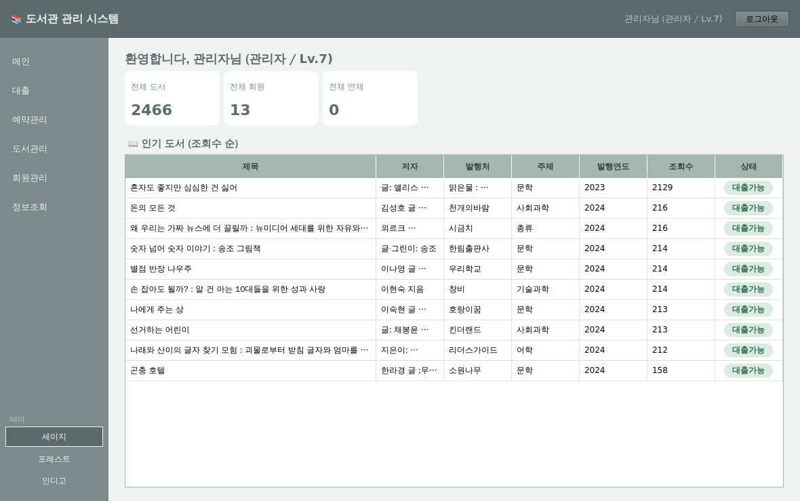
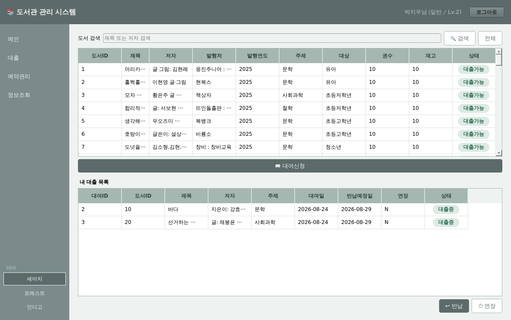
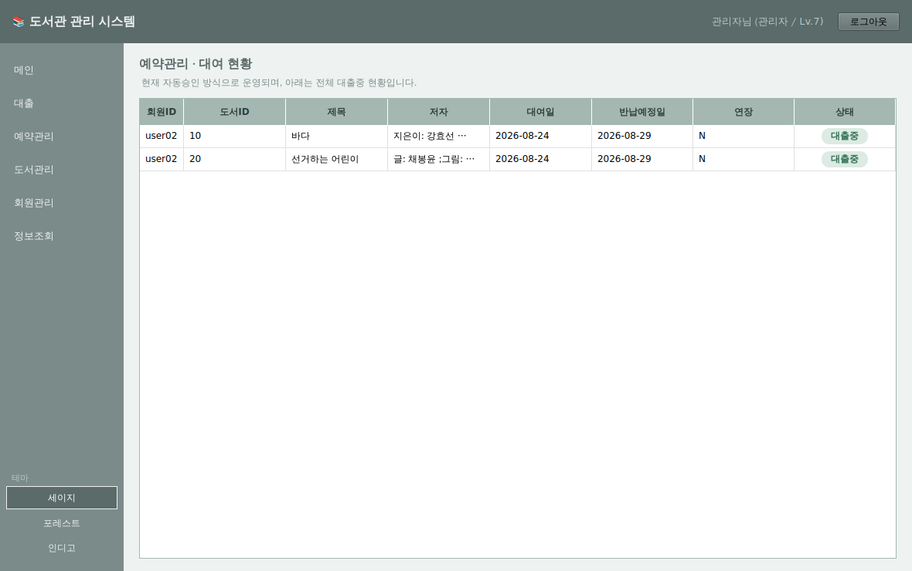
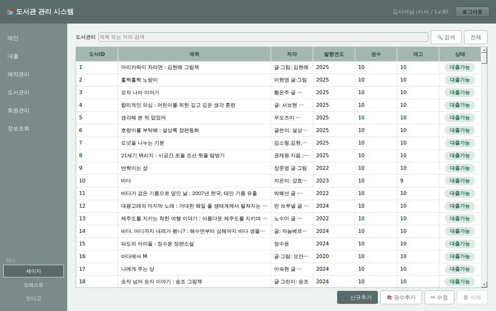
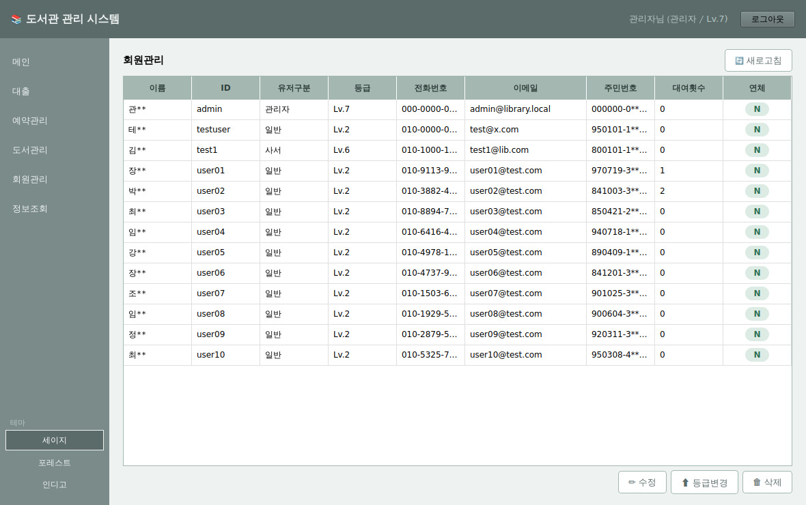
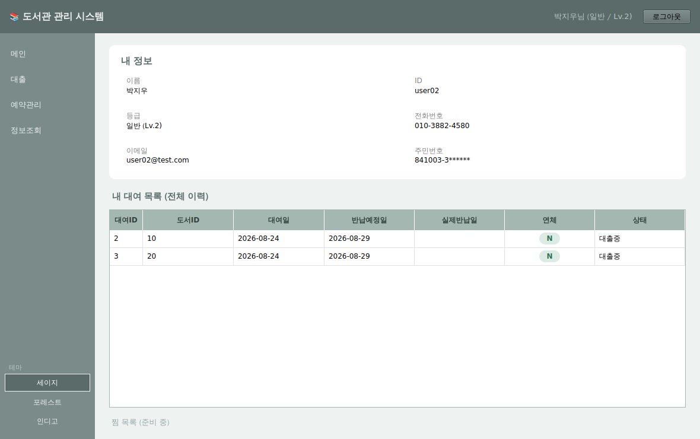
03
CLI Kiosk를 Qt GUI로 이식. 기존 데이터와 저장 방식을 재사용하면서 화면·이벤트 중심 구조로 재구성했습니다.
12번 이미지 크기 기준 · 4개 가로 1행
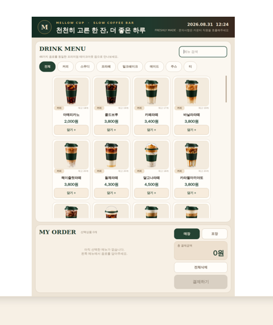
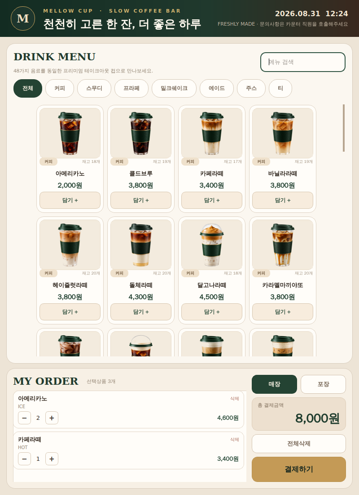
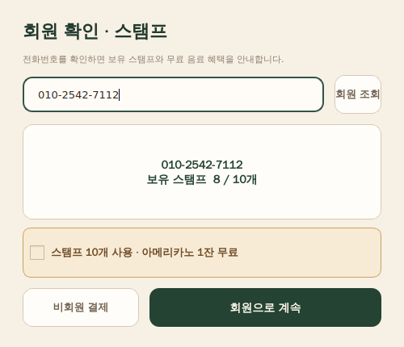
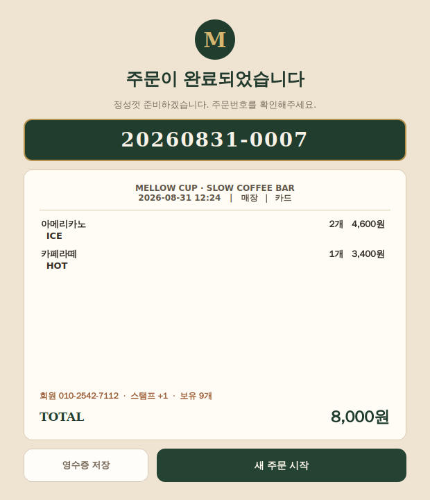
11번 모바일 크기 기준 · 3개 가로 1행
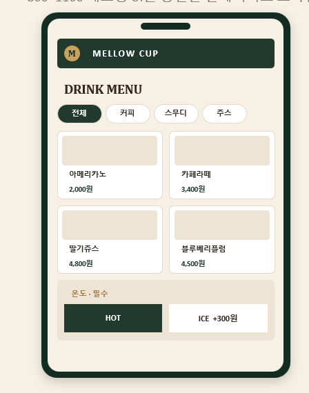
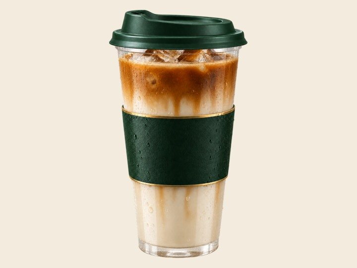
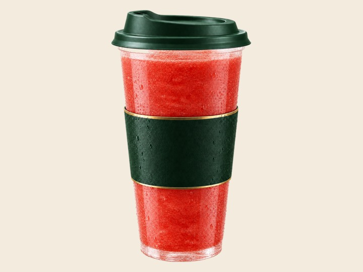
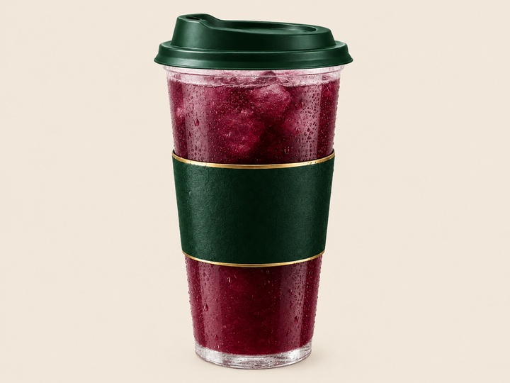
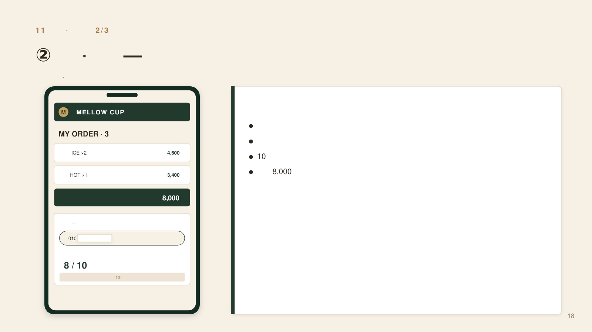
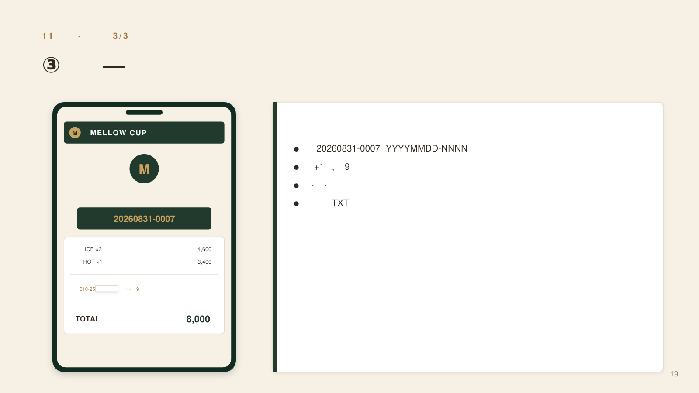
공통 설계 원칙
설정을 config에 단일화하고, 모듈을 분리하고, 데이터 기준을 먼저 세운다 — 실행 화면이 바뀌어도 데이터와 업무 규칙은 흔들리지 않는 구조.
Evidence Map
지원 직무 역량을 프로젝트 업무에 맞게 재설계·응용·적용했습니다. (Target role: AI·웹서비스 기획 · 서비스 아키텍처 · 데이터 구조화·리팩토링 · Technical PM)
강점의 중심
아키텍처 설계 기반 프로세스 정립 + 데이터 구조화 · 리팩토링
문제를 구조화하고 책임 경계를 나눈 뒤, 직접 구현하고 운영 데이터로 개선합니다.
01
현장·사용자 문제를 설계 언어로 전환
02
서비스·데이터·권한의 역할을 분리
03
기획에서 DB·백엔드·QA까지 연결
04
UX·구조화·로그·모니터링 등 운영 최적화